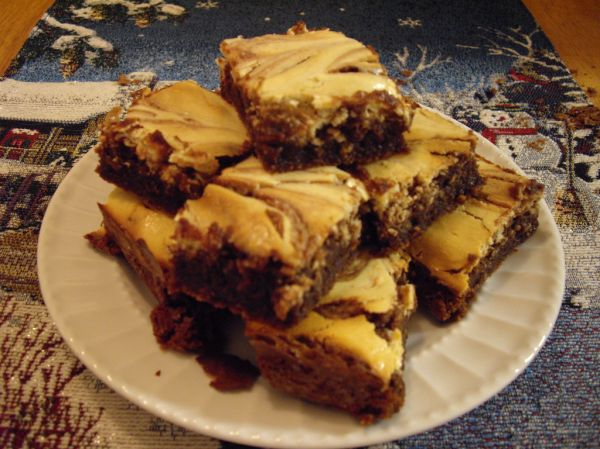

Cheese Brownies

Photo: meadowsa (CC BY 2.0)
Marbled brownies made by swirling a sweet cream cheese batter into a chocolate batter, then baking in a 9-inch square pan.
Directions
- Melt chocolate and 3 tbs butter over very low heat, stiring constantly. Cool. Cream remaining butter with cream cheese until softened. gradually add 1/4 cup sugar, creaming until light and fluffy, Blend in 1 egg, 1 tbs flour and 1/2 tsp vanilla. Set aside.
- Beat remaining eggs until thick and light in color. Gradually add remaining 3/4 cup sugar beating until thickened. Add baking powder, salt and remaining 1/2 cup flour. Blend in cooled chocolate mixture, nuts, extract and remaining tsp vanilla. Measure 1 cup chocolate and set aside.
- Spread remaining chocolate batter in greased 9 inch square pan. top with cheese mixture. Drop measured chocolate batter from tbs onto cheese mixture, swirl with spatula to marble. Bake at 350 degrees for 35 to 40 minutes. Cool, cut, cover and store in refrigerator.
- Melt the German chocolate chips and 3 tablespoons of the butter over very low heat, stirring constantly. Cool.
- Cream the remaining butter with the cream cheese until softened. Gradually add 1/4 cup of the sugar, creaming until light and fluffy. Blend in 1 egg, 1 tablespoon of the flour, and 1/2 teaspoon of the vanilla. Set aside.
- Beat the remaining eggs until thick and light in color. Gradually add the remaining 3/4 cup sugar, beating until thickened. Add the baking powder, salt, and remaining 1/2 cup flour. Blend in the cooled chocolate mixture, nuts, almond extract, and remaining 1 teaspoon vanilla.
- Measure out 1 cup of the chocolate batter and set aside.
- Spread the remaining chocolate batter in a greased 9-inch square pan. Top with the cheese mixture.
- Drop the measured 1 cup chocolate batter by tablespoons onto the cheese mixture; swirl with a spatula to marble.
- Bake at 350 degrees for 35 to 40 minutes.
- Cool, cut, cover, and store in the refrigerator.
Goes well with
https://lizotte.cool/recipe/cheese-brownies.html